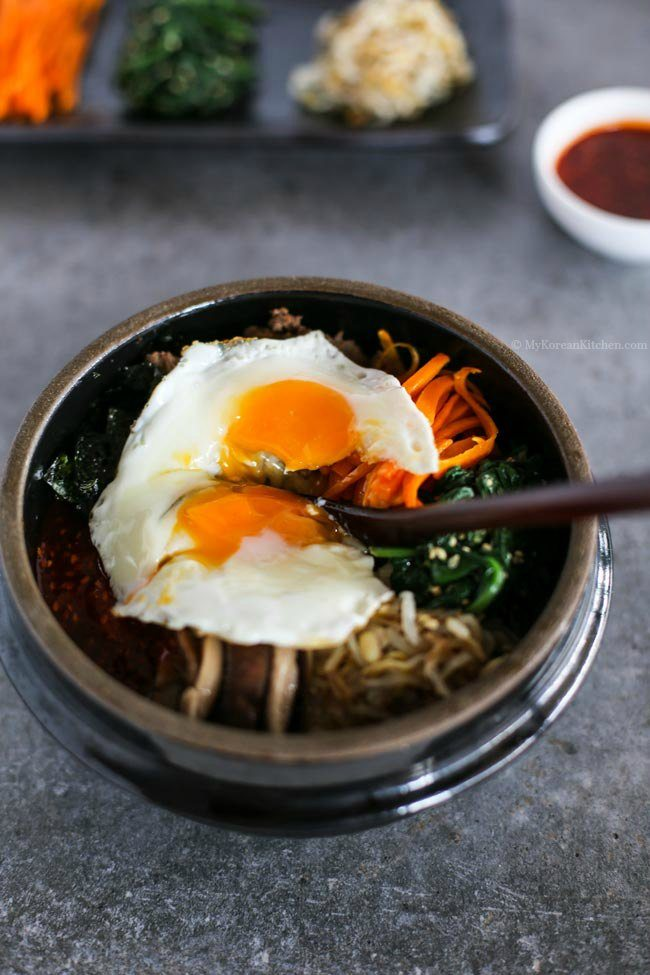

Image courtesy of and recipe adapted from My Korean Kitchen
Bibimbap (비빔밥) is probably one of the most well-known and beloved Korean dishes to many people. Even if people don’t know anything about Korea, it’s not too difficult to find people who had Bibimbap sometime in their lives.
Bibimbap simply translates to “mixed rice with meat and assorted vegetables“. You can make endless variations to this dish depending on your preference and dietary requirements (e.g. Saessak (micro leaves) Bibimbap) and also based on the dish/bowl it is served in (e.g. Dolsot (hot stone bowl) Bibimbap and Yangpun Bibimbap).
It is typically served with a spicy red pepper sauce, and this recipe for the sauce is absolutely delicious!
Servings 3 to 4
Prep Time 35 minutes
Cook Time 55 minutes
Total Time 1 hour 30 minutes
Serving Size 2 cups Serving Per Container 4Nutrition Facts
Amount Per Serving
Calories
560 kcal
Total Fat
15 g
Saturated Fat
4 g
Polyunsaturated Fat
0 g
Monounsaturated Fat
0 g
Cholesterol
20 mg
Sodium
564 mg
Potassium
0 mg
Total Carbohydrate
89 g
Dietary Fiber
4 g
Sugars
2 g
Protein
18 g
Values are only an estimate, and in no way to be taken as 100% accurate.